Brand Identity Kit & Interface Design
Wedriti
Creating a seamless way for international travelers to discover, prepare for, and immerse themselves in the colours, traditions, and celebrations of Indian weddings.
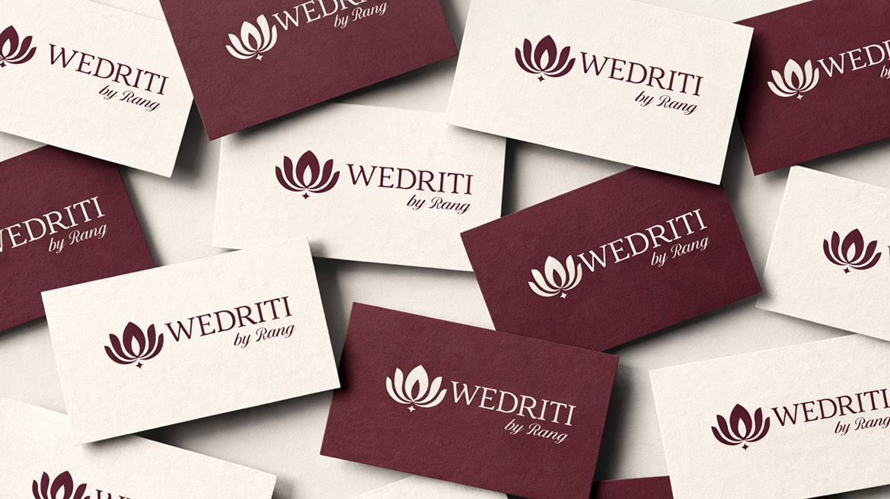
Vision
To create a trusted platform for authentic Indian wedding experiences, connecting global guests with local communities, artisans, and cultural traditions while opening doors to cultural participation.
International tourists visit India annually
Weddings happen every year
Indian weddings are among the most elaborate cultural events on the planet: multi-day rituals, dozens of ceremonies, hundreds of relationships converging in sacred choreography.
International guests want to witness this. Host families are flattered. But no platform exists to make this exchange safe, respectful, or meaningful.
This is the tension Wedriti was designed to navigate.
Every wedding is a living cultural ecosystem.
Not an event.
Not a product.
Human stakes
A host family opens their most intimate spaces. A bride's rituals, handed down across generations, are now performed in front of strangers with cameras.
Cultural stakes
Wedding ceremonies encode regional identity, caste customs, religious traditions, and family memory. Exposure without context strips them of meaning.
Economic stakes
Local artisans, cultural guides, attire partners, and mobility providers hold deep knowledge, and fragile livelihoods. A platform must serve them, not extract from them.
Trust stakes
A guest who misunderstands a ritual can cause irreversible offence. A host who feels objectified will never participate again. Trust is the entire product.
Service design means thinking in relationships, not screens.
Information architecture · Platform structure
Platform root
Wedriti by Rang
Guest portal
Discover & Book
Host portal
List & Manage
Vendors hub
Attire & Mobility
Trust layer
Verify & Protect
Link to detailed IA
Explorations - Logo


Direction 01
Palace arch
Arches recall Rajasthan's palaces for destination weddings; the red dot is a bride's sindoor, folded hands read as namaste hospitality.

Direction 02
Divine ritual flame
A kalash leaf and lotus rise from a sacred havan platform, the auspicious flame that witnesses every ceremony.

Direction 03
"W" initial
W for Wedriti, the name of the business, with folded hands woven into the negative space to signal hospitality.

Selected
Final mark
The lettermark and lotus flame merge into a single symbol, carried through as the brand's primary mark.
Moodboard
Moodboard
Every element of the Wedriti identity system is derived from cultural symbols, each carrying meaning before it carries aesthetics.
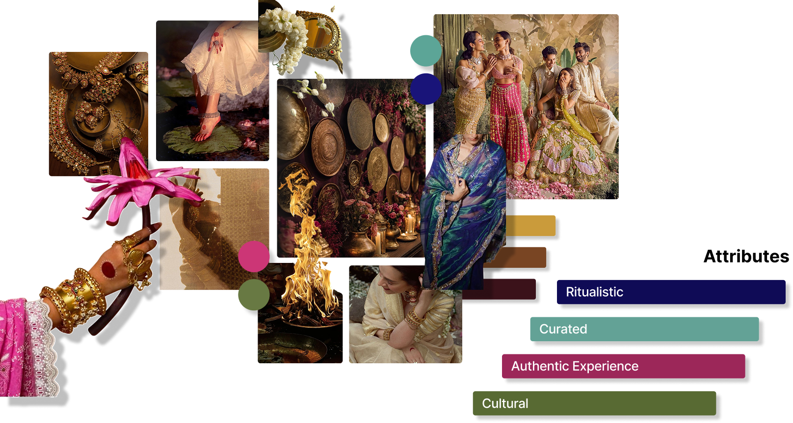
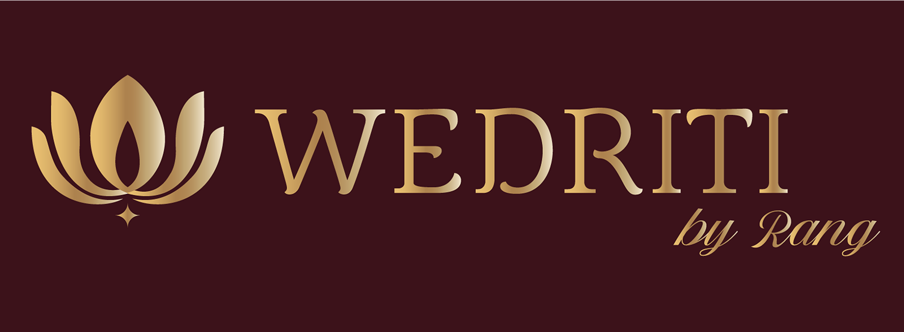
Lotus
The lotus is deeply rooted in Indian culture, symbolizing purity, sacredness, and divine beginnings.
"W" initial
The "W" formed within the lotus petals represents the initial of our brand name, Wedriti, subtly integrated into the logo design.
Fire
In Indian weddings, fire (Agni) is a witness to the marriage. This directly connects the brand to authentic rituals, not just celebration aesthetics.

Star
The star in our logo symbolises celebration, representing joy and togetherness, weddings as moments of shared happiness and meaningful milestones.
The visual identity is not decoration.
It is the promise made visible.
Colour palette
Brand Patterns
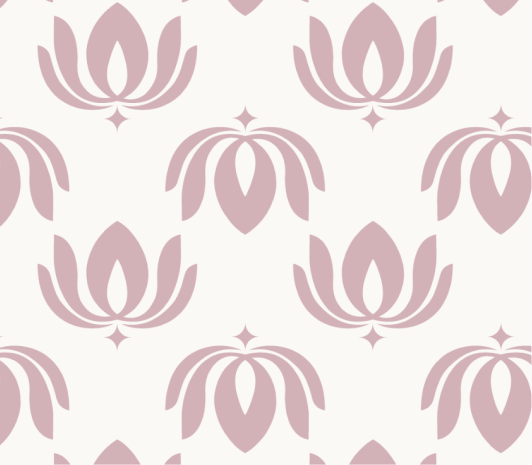
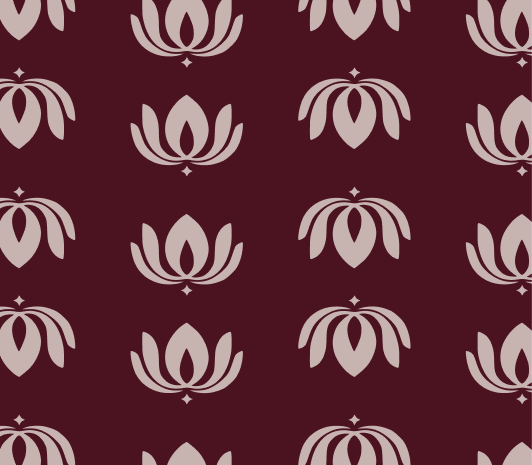
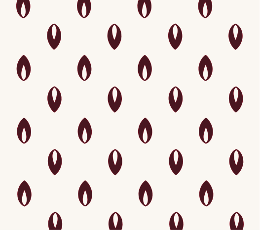
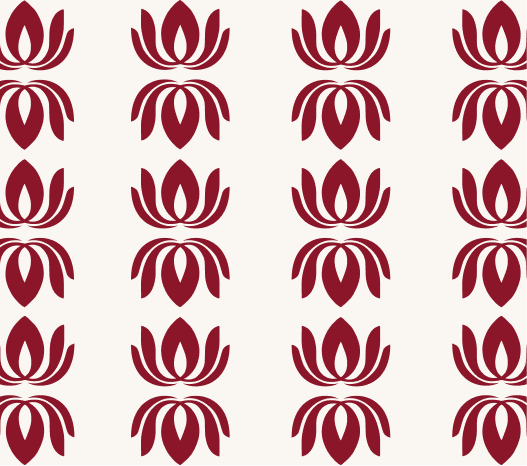
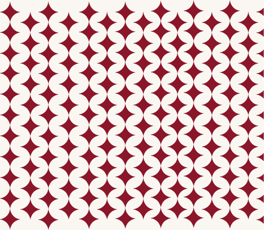
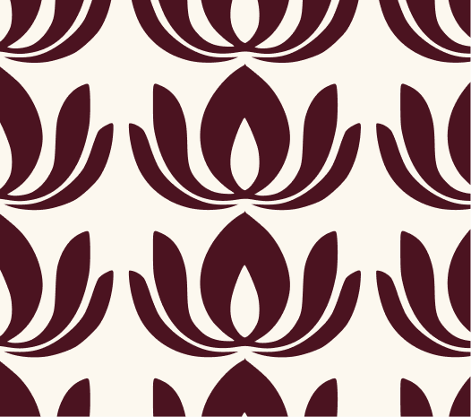
Mockups
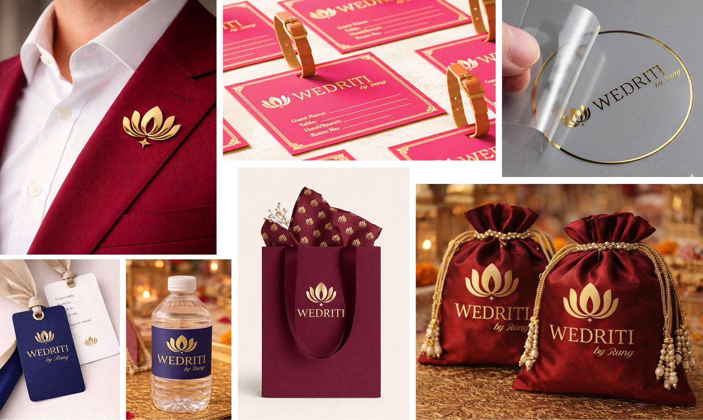
Card sort output · user mental models (n=4 participants)
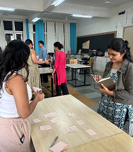
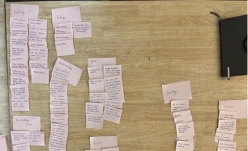
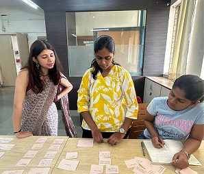
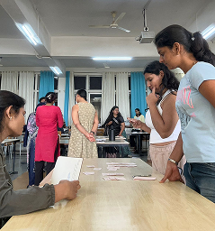
Paper Wireframes and User testing
Before


After


Typography, spacing, icons and buttons
Type hierarchy
Layout grid

Icons

Buttons scale

Button states

User Scenarios and High fidelity wireframes
Meera Sajane, a cultural guide who has joined Wedriti as a vendor few months ago, logs into her dashboard to begin managing her services on the platform. On the Dashboard, she quickly reviews her upcoming weddings, new booking requests, ratings, and a snapshot of her earnings to understand her current performance. She then moves to the Weddings section to check detailed client requests, reviews event dates and locations, and accepts a suitable booking, which instantly reflects in her Schedule with clear timelines and venue details. After the event, Meera visits the Feedback page to read client reviews and monitor her ratings, updates her Profile to refine her bio and availability, and finally checks her Income Statement to track completed events and payouts, helping her stay organized while steadily building her presence on Wedriti.
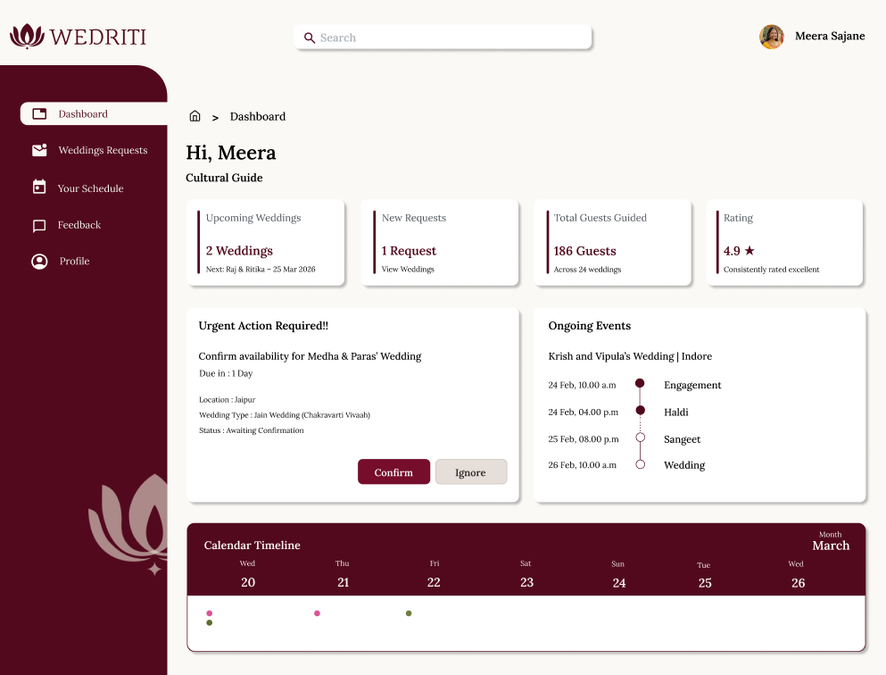
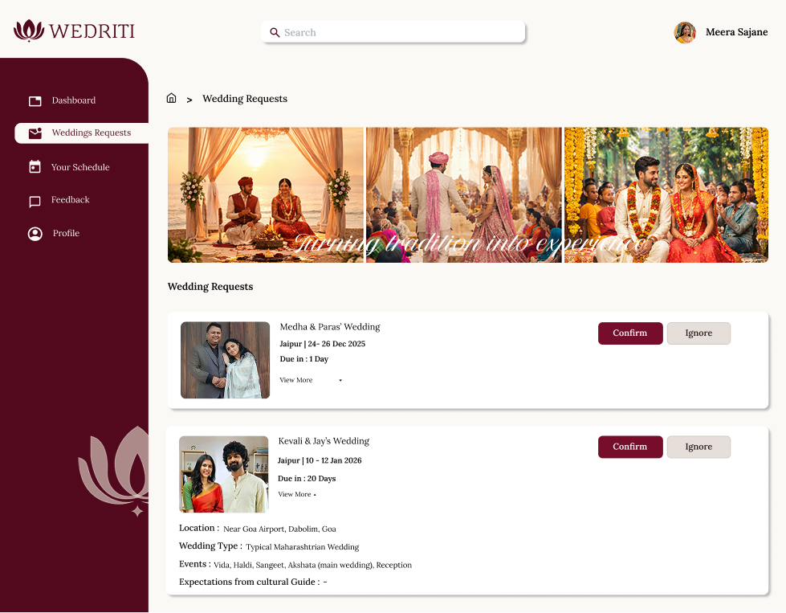
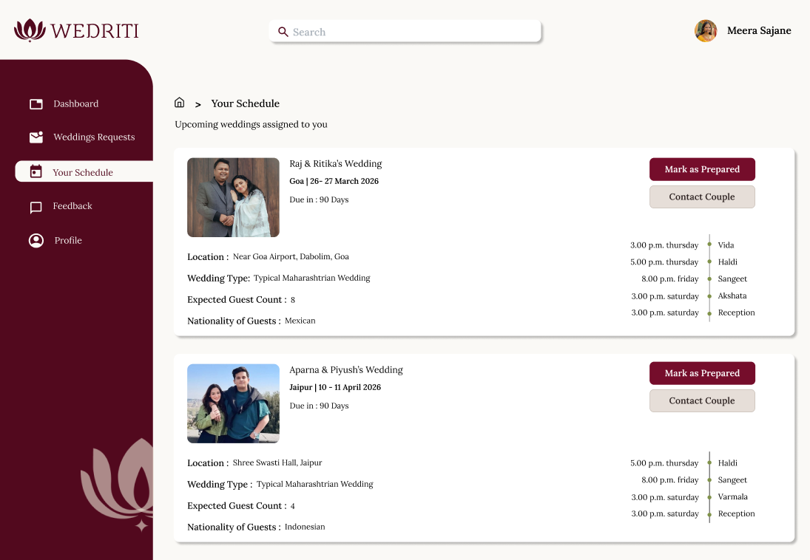
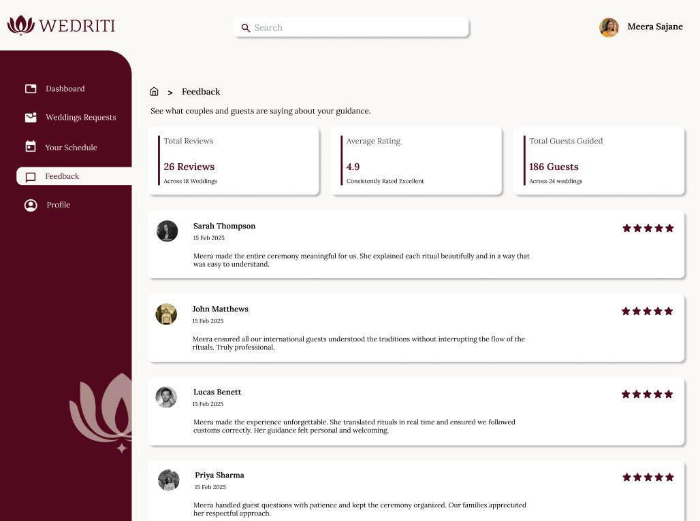
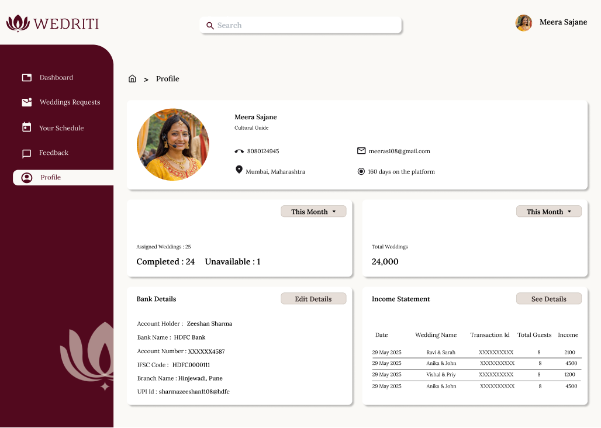
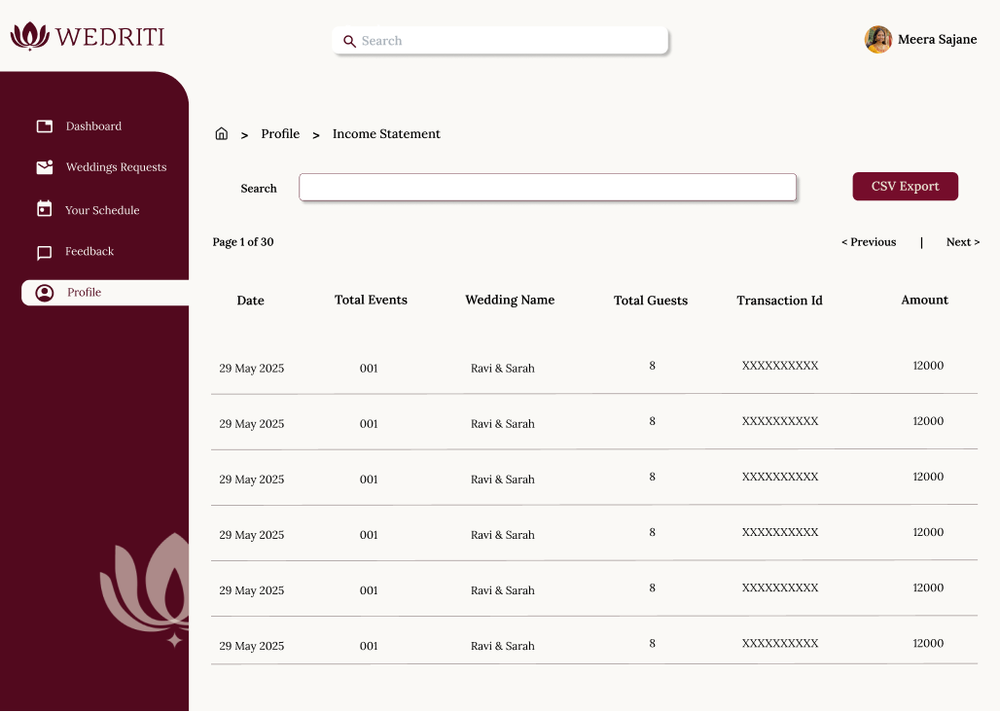
Other main High fidelity wireframes
Homepage
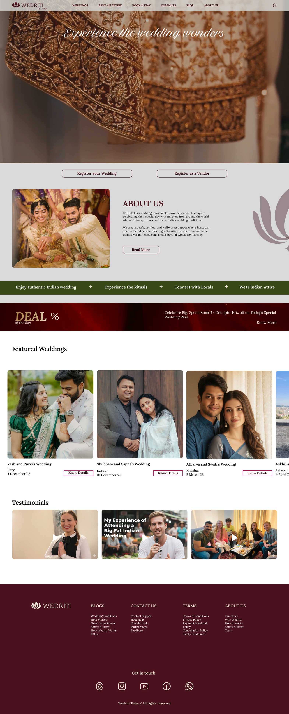
Rent an attire tab

Services tab
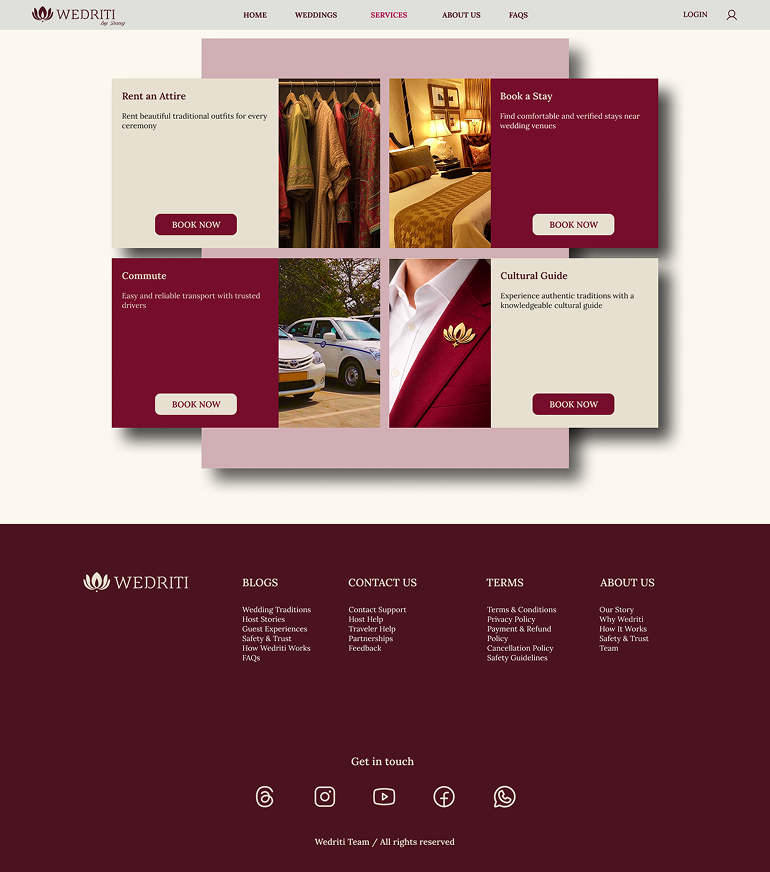
What this process taught.
On complexity
A system with seven stakeholder groups is not one design problem. It is seven problems that must solve each other. Service design taught me to think in ecosystems, not interfaces.
On brand
Brand identity built on cultural symbolism cannot be decorative. Every visual decision must be justified by meaning. Aesthetic choices are ethical choices.
On trust
The most important design decision on this project was invisible: the privacy control architecture (packages) that gives host families sovereign control over their experience.
Skills applied & developed
Wedriti, by RANG.
Creating a seamless way for international travelers to discover, prepare for, and immerse themselves in the colours, traditions, and celebrations of Indian weddings.
Team
Nidhi Patil
Rashmi Gore
Akanksha Parwatkar
Gaurangi Tambe
Mentor
Prof. Shailaja Bhagwat